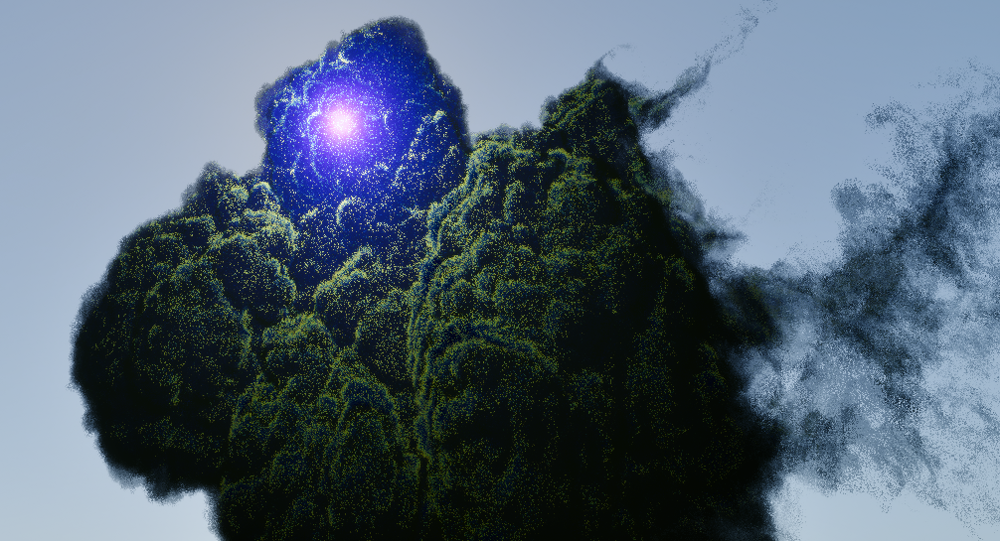
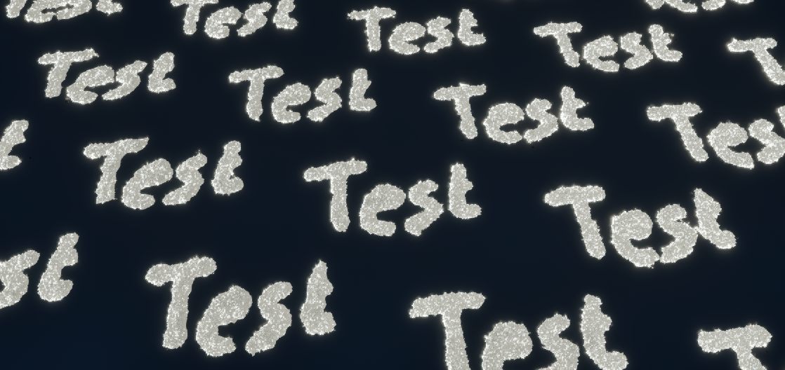

Volumetric Clouds & Weather System
Both local and global volumetric shapes rendered using correct PBR techniques. Handled by a simple weather system.

One interesting field of research that still hasn't reached such a level of minutia and remains thus remains open-ended is volumetrics. There is much to explore around the mathematics that define the shapes of the clouds themselves and how we can performantly sculpt them to our liking. But also, on how to direct weather and the other effect that surround the cloud system itself. Not to mention the ever-evolving field of physics and the pursuit of correct PBR formulas.
At GOBO we wanted to see how far we reasonably push our knowledge, learning about the above and bringing that information to a workable solution in isolation at least. This didn’t need to be feature complete or extensive, it just had to show the potential of such a custom build implementation.
So, to set a scope of what will be discussed, I implemented: a local volumetric shader, a full screen volumetric cloud shader, correct PBR formulas (Beer-Lambert, GG Powdered Sugar, Henyey-Greenstein dual lobed phase function, Oz-Wrenninge multi-scattering), cloud shaping functionality through simple UI, and a weather system (although this could only influence clouds density according to a 2D weather map texture).
Now, having said all that, let's discuss some of this in a little more detail. Do take note, that I cannot give out any code, and many of these pictures were made during development. So let's first have a look at some of the nicer ones:
Local Vs Global:
Reasonably, a developer wants at least two types of volumes, local and global. In this case I explored both in the simplest way possible. There are obvious upsides and downsides, not to mention the potential optimizations.
First, for the local volumes we use a bounding cube. With the faces inverted. Then in the pixel shader we can calculate the world position, with which we can start raymarching.
Second for the global volumes, like clouds, we use a full screen pass. And we ray march for one out of four of our pixels. Using dithering, we swap between all of these each frame. And then integrate them into a persistent target (keeping in mind reprojection from camera movement).
PBR Formulas:
The basic idea behind Beer’s Law (Beer-Lambert) is to simulate the absorption and scattering of light through a medium of specified density over a certain length. From this, we can already: one, simulate the see-through properties of volumes; and two, simulate a combination of various colours. As you can see here, what’s neat is the early scattering and absorption of red light, causing more blue light to remain the further you get inside of the shape. Also notable are the shadows cast by the volume onto itself, due to the diminishment of the light as it has already travelled some distance.
The "powdered sugar" effect as described by Guerrilla Games is a natural
phenomenon for which we don’t currently have a proper physically
accurate formula. However, as graphics programmers, we can handwave
some of this since it mainly needs to look correct, behave as expected,
and look good overall.
In clouds, powdered sugar, and snow, we have this weird effect where
the edges of bulges on the “surface” are darker than the inside of
the actual shape. This is because these materials get their colour
from light scattering. If you remember, in Beer’s Law light the amount
of scattered light is a function of the distance travelled, hence
why on shallow intersections a volume looks darker.
In order to fix this, we basically combine Beer’s Law with some
simple but effective maths, that you can find in this
presentation:
GG-Clouds.
This gives the effect below, left is the regular Beer’s law and right
is with GG’s adjustment.
The Henyey-Greenstein formula allows us to direct the light in a lobed shape. Since most of the time, light will want to keep moving in the same direction, or at least will tend to be reflected back towards its origin. Using this, we can control the size of the bright spot you see below.
Cloud Shaping:
Artists like having control over the shape of their clouds. However,
it is surprisingly troublesome to do. Not to mention, once you have
a good-looking cloud, leaving levers available to them to adjust
the shape further is not easy either! So, for this, we needed to
think of some basic data from which this original shape can be
derived. This basic information can then be used to further sculpt the
final shape.
In our case, I decided to use the build-in curves within Unreal.
These allow us to define some basic info: density at height,
billowiness at height, whirliness at height. Height being the
x-axis from 0 to 1 mapped onto the actual bounds in metres
(IE 0-1 -> 500 m-4 km). Curves however can’t directly be pushed to
the GPU. Instead, I made it so that 32 cloud types could be defined,
all of which get sampled and drawn as 1D textures on a 2D texture.
Here you can see an example.
Then, finally, once a shape has been defined, we can erode from it. Using the billowiness and whirliness parameters mentioned before. Erosion is quite powerful but hard to direct, as you can see on the first image below. But if done well and in different octaves, then progressive results, as shown in the three images below can be achieved.
Weathermap:
Finally, we must mention where our clouds are going to be placed. We know how dense and eroded they will look at certain heights, but no location has been mentioned yet. This, at the end of the day, is the simplest step. Simply using a single-channel texture, we can define the coverage. A test example can be seen below.
